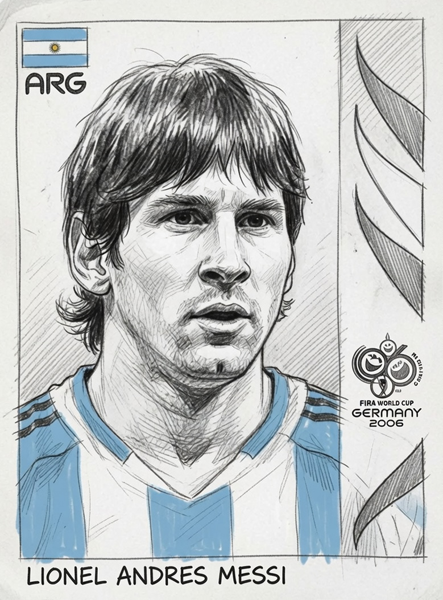
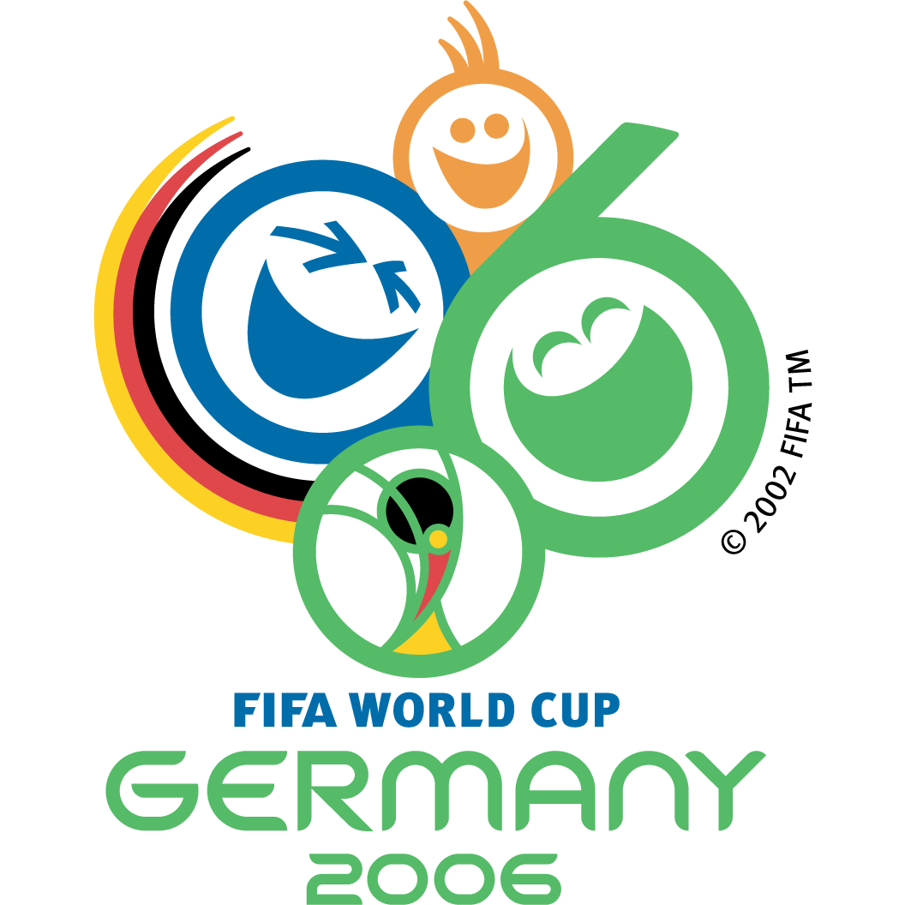

El debut mundialista, a los 18El primer Messi: la figurita más codiciada
En Alemania 2006, Lionel Messi tenía 18 años y llevaba en el bolsillo el título del Sub-20 de 2005, donde había sido goleador y mejor jugador del torneo. Pero en el combinado mayor seguía siendo una promesa: entró desde el banco con la 19 en la espalda, marcó en la goleada 6 a 0 a Serbia y Montenegro y se despidió del Mundial en cuartos, eliminado por Alemania. Esa figurita, la del pibe que todavía tenía todo por demostrar, es hoy la más codiciada de toda su carrera.
Rodrigo López Lapira lo explica con un término que viene del coleccionismo estadounidense: la rookie, la primera figurita de un jugador. La de Messi en mundiales es la de 2006. “Pasamos a hablar de un valor de 50 dólares por una figurita de Messi de 2006, contra una de hoy que te sale 1 o 2 dólares”, cuenta.
El furor por las rookies, según López Lapira, empezó en la Argentina cuando murió Maradona: los coleccionistas de afuera salieron a buscar su primera figurita, la de 1978 con la camiseta de Argentinos Juniors, y de ahí se contagió la costumbre de cazar las primeras de cada crack.
2006 fue, además, un álbum bisagra. “Es el último que fabrica Brasil para la Argentina”, apunta el coleccionista: después se instaló la planta de Panini con New Rita y los álbumes pasaron a hacerse en el país. Y fue, para él, el más caro de los de Messi.
“El que vi más caro, dentro de los de Messi, fue el del 2006.” Rodrigo López Lapira, coleccionista